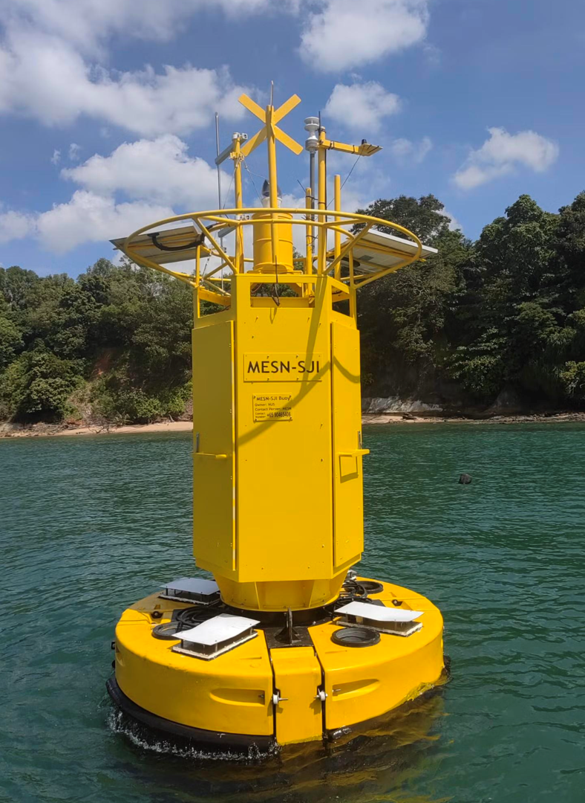
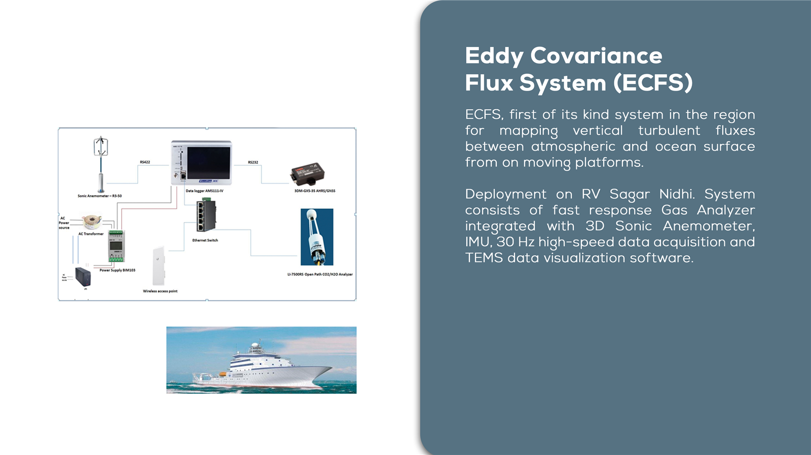
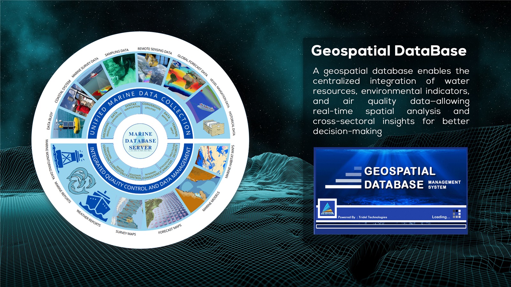
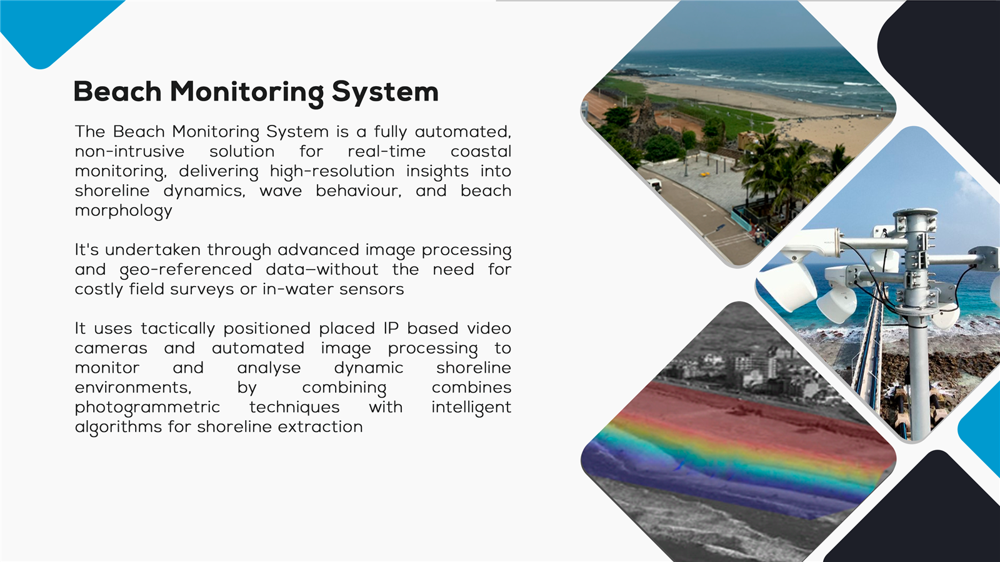
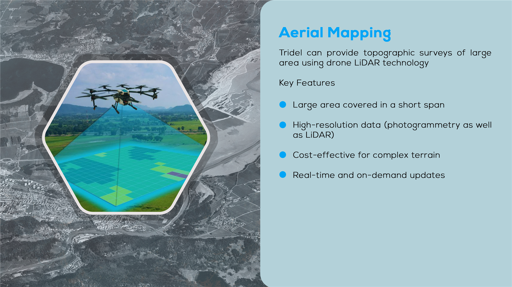

Our Services
Providing end-to-end solutions across the entire project lifecycle, from initial studies to data management and custom engineering.
Environmental Monitoring
Advanced data collection and analysis for marine and coastal environments.

MetOcean Monitoring
Comprehensive meteorological and oceanographic data collection services.

Atmospheric & Underwater Noise
Monitoring ambient noise levels in marine and coastal environments.

Air Quality Monitoring
Precision air quality monitoring for offshore and coastal projects.

Water Quality Monitoring
Real-time water quality parameter tracking and analysis.

Ground Water Monitoring
Subsurface water level and quality monitoring solutions.
Environmental Surveying
Comprehensive hydrographic and geophysical survey services.

Bathymetric Surveys
High-resolution seabed mapping and depth measurement.

UXO Survey
Unexploded Ordnance (UXO) detection and risk assessment.

GeoTechnical Survey
Soil analysis and sub-bottom profiling for engineering projects.
Navigational Charting
Production of electronic navigation charts and publications.

Topographic Survey
Land survey and mapping for coastal and onshore infrastructure.